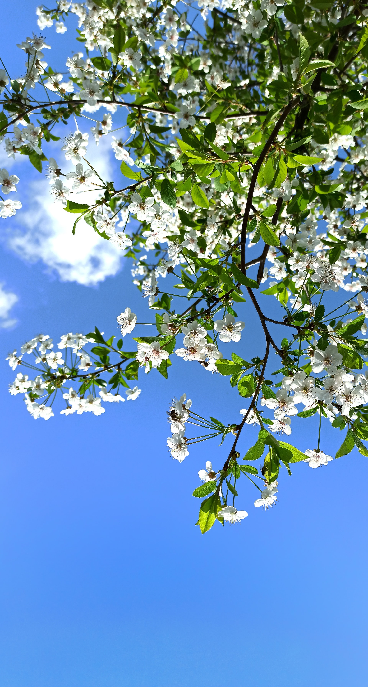

Spring, in climatology, season of the year between winter and summer during which temperatures gradually rise. It is generally defined in the Northern Hemisphere as extending from the vernal equinox (day and night equal in length), March 20 or 21, to the summer solstice (year’s longest day), June 21 or 22, and in the Southern Hemisphere from September 22 or 23 to December 22 or 23. The spring temperature transition from winter cold to summer heat occurs only in middle and high latitudes; near the Equator, temperatures vary little during the year. Spring is very short in the polar regions. For physical causes of the seasons, see season. In many cultures spring has been celebrated with rites and festivals revolving around its importance in food production. In European languages, the concept of spring is associated with the sowing of crops. During this time of the year all plants, including cultivated ones, begin growth anew after the dormancy of winter. Animals are greatly affected, too: they come out of their winter dormancy or hibernation and begin their nesting and reproducing activities, and birds migrate poleward in response to the warmer temperatures.
